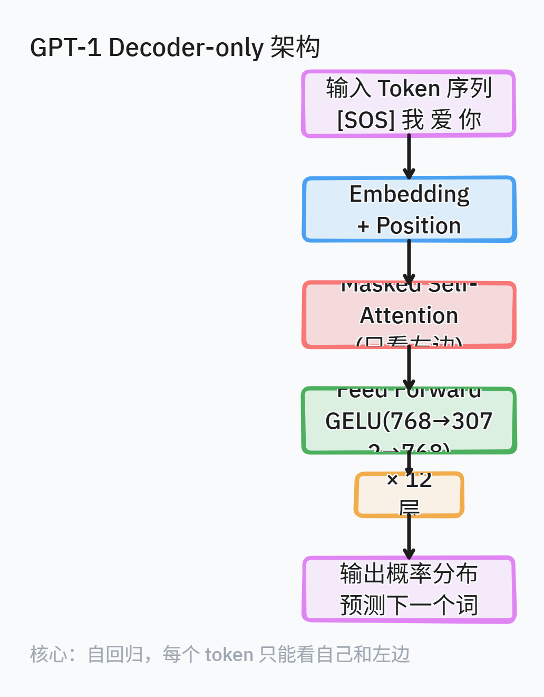
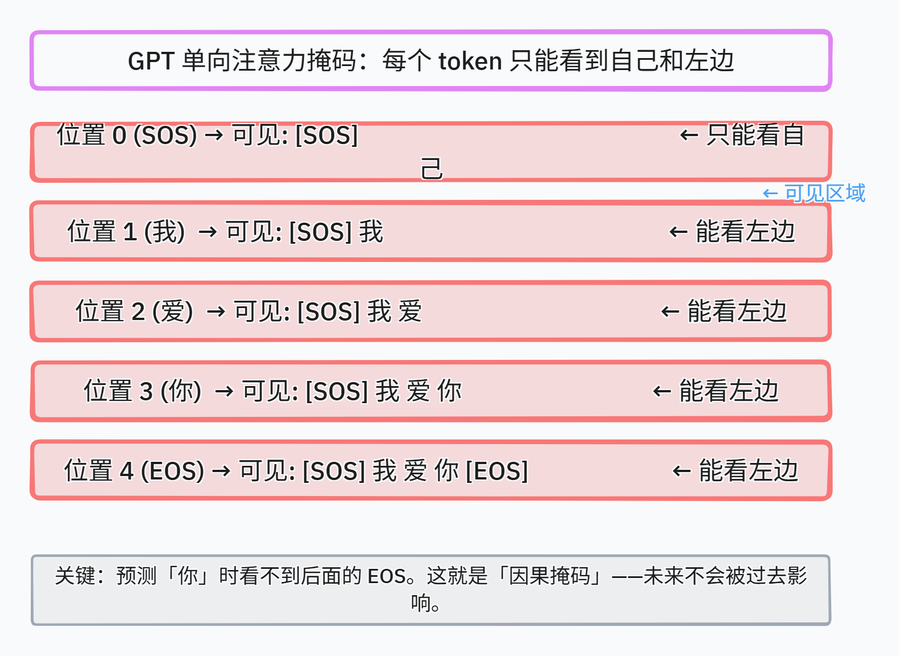

从 BERT 到 GPT：一个对称的思路
2018 年是 NLP 的转折年。Google 的 BERT 用双向编码器横扫了理解类任务，OpenAI 的 GPT-1 则在同一年走了另一条路——只用 Decoder，只做生成。
BERT 擅长把一句话变成一组向量然后分类，GPT 擅长从一段文字续写下一段。两者共享同一个技术底座——Transformer——但选择了完全相反的架构配置。这个架构上的分歧决定了此后五年大模型发展的两条主线，直到 GPT-3 出现后生成式路线才逐渐成为主流。
核心设计：Decoder-only 与自回归
GPT-1 的架构改动非常小：从 Transformer 原论文里取出 Decoder 部分，去掉 Encoder-Decoder 交叉注意力层，只保留 Masked Multi-Head Self-Attention + Feed Forward，堆 12 层。

图 1：GPT-1 Decoder-only 架构（tldraw 绘制）
每一层的技术细节
Masked Self-Attention：每个 token 只能看到自己和左边的 token。实现方式是在 softmax 之前把未来位置的分数设为 -∞：
|
|
这个掩码是三角形的（triangular mask），对角线以下是可见的，对角线以上被遮住。softmax 之后，被遮位置的权重为 0，不会影响后续计算。
Feed Forward：两层全连接网络，使用 GELU 激活函数：
|
|
GPT-1 的 inner 维度是 3072（隐藏维度 768 的 4 倍），输出维度 768。GELU 比 ReLU 更平滑，在负半轴保留非零梯度，对深层网络的训练更稳定。
Layer Normalization 的位置：GPT-1 把 LayerNorm 放在每个子层之前（pre-norm），而原始 Transformer 放在之后（post-norm）。这个看似微小的改动后来被证明对训练稳定性至关重要——pre-norm 更容易训练深层网络。
训练细节
| 参数 | GPT-1 | GPT-2 Small |
|---|---|---|
| 层数 | 12 | 12 |
| 隐藏维度 | 768 | 768 |
| 注意力头 | 12 | 12 |
| 参数量 | 117M | 124M |
| 训练数据 | BookCorpus (~1B 词) | WebText (~40GB) |
| Batch size | 64 | 512 |
| 学习率 | 2.5e-4 (warmup + cosine) | 2.5e-4 |
| 优化器 | Adam | Adam |
| 最大序列长度 | 512 | 1024 |
GPT-2 的改动主要是加大序列长度（512→1024）和 batch size（64→512），架构几乎不变。
核心思想：为什么 Decoder-only 能做理解？
当时的主流观点是：理解任务需要双向上下文，所以 Encoder-only（BERT）更合理。GPT 用实验证明了一个反直觉的结论：生成式预训练本身就能学会理解。
直觉是这样的：语言模型在预测下一个词时，必须理解前面所有词的含义、语法关系、指代关系、甚至常识。如果模型能准确预测"小明去了超市，他买了一个___"，它必须知道"他"指代"小明"、“超市"暗示可以买"苹果"而不是"汽车”。预测下一个词这个任务，天然包含了理解。
GPT-1 在 12 个 NLP 任务中的 9 个上取得了 SOTA。虽然绝对分数不如 BERT（因为 BERT 的双向编码确实在理解任务上更优），但 GPT-1 证明了生成式预训练这条路是可行的。
GPT-2 的关键发现：隐式多任务学习
GPT-2 沿用了 GPT-1 的架构，核心变化是放大规模和数据，但发现了更重要的东西。
零样本能力
GPT-2 最令人惊讶的发现是：完全没有经过微调，在零样本设定下测试：
- 机器翻译（WMT-14 英法）：零样本 BLEU 11.5——虽然远不如专有模型，但这是在没有任何平行语料的情况下做到的
- 阅读理解（CoQA）：零样本 55 F1，接近有监督 baseline
- 摘要（CNN/Daily Mail）：零样本 ROUGE-L 与有监督模型相当
这意味着什么？GPT-2 在训练时从没见过任何翻译任务的数据，但当给它一段"English sentence = French sentence"的格式时，它自动学会了翻译。模型在预训练过程中隐式地学习了一个多任务学习器。
规模的影响
GPT-2 发布了四个版本，参数量从 124M 到 1.5B。实验发现：
| 模型 | 参数量 | 零样本 LAMBADA 准确率 |
|---|---|---|
| GPT-2 Small | 124M | 45.0% |
| GPT-2 Medium | 355M | 55.0% |
| GPT-2 Large | 774M | 58.0% |
| GPT-2 XL | 1.5B | 63.0% |
规模越大，零样本准确率越高，而且没有饱和的迹象。这个趋势直接影响了两件事：
- GPT-3 的 175B 参数决策——既然 1.5B 还没饱和，再放大 100 倍会怎样？
- Scaling Law 的提出——Kaplan 等人 2020 年的 Scaling Law 论文直接引用了 GPT 系列的数据
单向注意力掩码的可视化

图 2：GPT 因果掩码——每个 token 只能看到自己和左边（tldraw 绘制）
图中展示的是 GPT 在预测每个位置时的注意力可见范围。预测 SOS 时只能看自己，预测"你"时可以看到 SOS、我、爱，但看不到后面的 EOS。这个看似简单的三角掩码，决定了 GPT 的生成能力和理解局限。
为什么 GPT-1/2 值得关注
技术启示
-
Decoder-only 成为主流。GPT-3、LLaMA、Mistral、DeepSeek 都采用了 GPT 开创的 Decoder-only 路线。Decoder-only 最终被证明在大规模下最有效——原因是：Encoder-only 只能做理解，Encoder-Decoder 需要同步两个模块，而 Decoder-only 可以无限堆叠，单纯靠规模解决问题。
-
零样本能力改变了一切。GPT-2 证明了模型可以不经微调就迁移到未见过的任务。这个发现直接催生了 GPT-3 的 in-context learning，以及后来指令微调、RLHF 等技术路线。如果没有 GPT-2 的零样本发现，GPT-3 可能不会选择"few-shot prompt"这个方向。
-
Scaling 路线的起点。GPT-1 117M → GPT-2 1.5B → GPT-3 175B，这条增长曲线不是偶然的。GPT-2 的实验数据直接支持了"越大越好"的假设。
格局变化
GPT-1 发布时（2018 年 6 月），NLP 领域的主流是 LSTM + Attention。GPT-1 证明了 Transformer 在生成任务上同样有效。半年后 BERT 在理解任务上全面超越 GPT-1，所以 GPT-1 的注意力被抢走了。
但 GPT-2 发布时（2019 年 2 月），情况变了。OpenAI 因为担心滥用，最初只发布了 124M 的小模型，九个月后才全面开源 1.5B 的完整版。这个"不开源"的决定本身就说明：他们意识到这个方向可能比想象中更强大。
参考资料
- Radford, A., et al. (2018). Improving Language Understanding by Generative Pre-Training. OpenAI.
- Radford, A., et al. (2019). Language Models are Unsupervised Multitask Learners. OpenAI.
- Devlin, J., et al. (2018). BERT: Pre-training of Deep Bidirectional Transformers for Language Understanding. arXiv:1810.04805.
- Brown, T., et al. (2020). Language Models are Few-Shot Learners. arXiv:2005.14165.
- The Illustrated GPT-2 (Jay Alammar): http://jalammar.github.io/illustrated-gpt2/